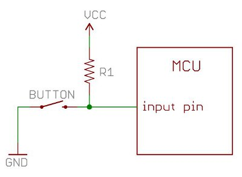
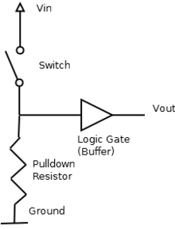
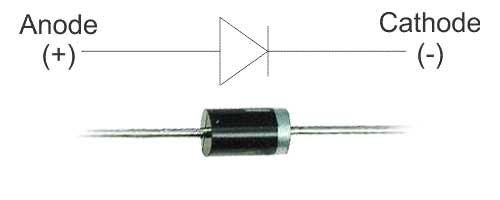
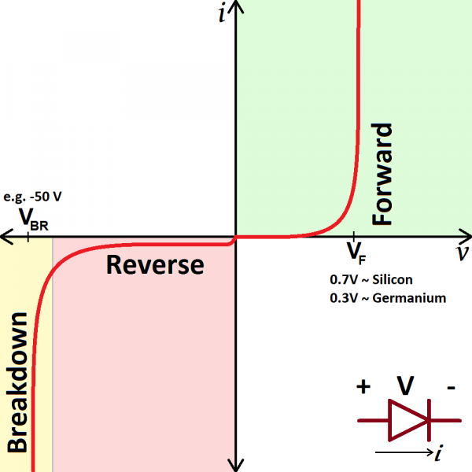
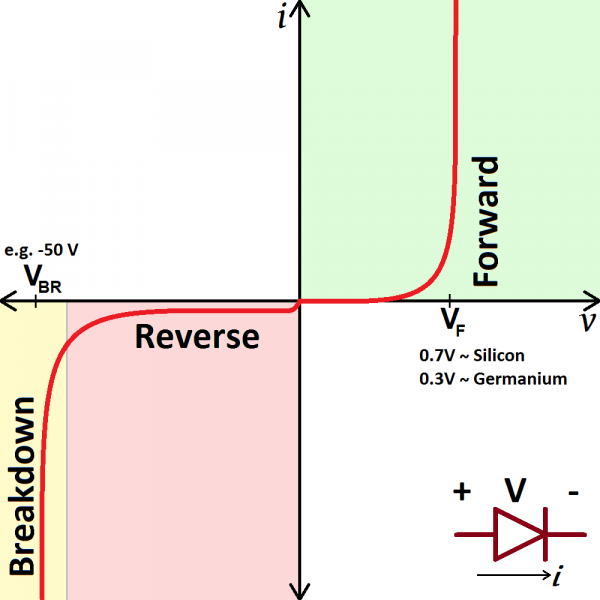

Elektronikk for Arduino
En introduksjon

Hva er en Arduino?

Arduino
- Open source hardware
- Microcontroller
- Arduino Programming Language
Kan vi forstå hvordan dette virker???
Elektronikk innføring
- Komponenter
- Kretssymboler
- Enkle kretser
Motstand / Resistor

Motstand

Enhet: Ohm (Ω)
| Ohms lov | Effect |
| \begin{align}U = I\cdot R \end{align} | \begin{align}P = U \cdot I \end{align} |
| \begin{align}I = \frac{U}{R}\end{align} | \begin{align}= \frac{U^{2}}{R}\end{align} |
| \begin{align}R = \frac{U}{I}\end{align} | \begin{align} = I^{2} \cdot R \end{align} |
Spenningsdeler
\( V_{out} = V_{in} \cdot \frac{R_{2}}{R_{1} + R_{2}}\)
Example:
\( V_{in} = 10 V \)
\( R_{1} = 250 \Omega \)
\( R_{2} = 750 \Omega \)
\( V_{out} = 10*250/(250+750) = 2.5 V \)
https://learn.sparkfun.com/tutorials/resistors/example-application
Potensiometer

Strømbegrensende motstand
https://www.sparkfun.com/tutorials/219
Pull-up motstand
https://learn.sparkfun.com/tutorials/resistors/example-application
Pull-down motstand

Diode

Leder strøm i bare en retning
Sperrer i den andre retningen
Types of diodes
Dioder - anvendelser
- Likeretting
- Polaritetsbeskyttelse
- Spenningsregulering
- Overspenningsbeskyttelse
- Demodulering av AM signaler
http://www.electronics-tutorials.ws/diode/diode_6.html
LED - Light Emmiting Diode

Diode som avgir energi i form av lys
LED - polaritet

IV-kurve for en diode
 

- IV kurve - viser strøm som funksjon av spenning
- \(V_{f}\) (forward voltage): minimum spenning over dioden før den begynner å lede strøm
https://learn.sparkfun.com/tutorials/diodes
\(V_{f}\) - forward voltage
Hva vil skje?
\(I = \frac{U}{R} = ???\)
Løsning - strømbegrensende motstand
Example:
\( V_{cc} = 9 V \)
\( V_{f} = 2 V \)
\( i = 20 mA \)
\( R_{1} = \frac{V_{cc}-V_{f}}{i} = \frac{9V-2V}{20mA} = 350 \Omega \)
Hvordan ødelegge en arduino?
- For høy spenning
- For høy strøm
- Reverse polarity - strøm i feil retning
- Statisk elektrisitet
Hvordan ødelegge en arduino?
- Trekke for mye strøm gjennom en I/O pinne (inn eller ut) - >20mA per pinne
- Kortslutte 5V/3.3V pinner til jord (eller til en annen pinne i "low" state)
- Kortslutte output pinner til jord (eller til en annen pinne i "low" state)
Hvordan ødelegge en arduino?
- For høy spenning (\(V_{cc}\) eller I/O pinner)
- Feil polaritet på \(V_{cc}\)
- For mye total strøm ut fra \(V_{cc}\) eller inn gjennom GND (>200mA / pinne)
- Forsyne strøm gjennom 5V eller 3.3V samtidig som man trekker strøm fra \(V_{in}\) (skal være motsatt)
- Trekk ut kontakten til arduinoen!
- Koble opp kretsen
- Sjekk alt og dobbeltsjekk!
- Sett inn "kontakten" (koble til strøm)
- Det virker!